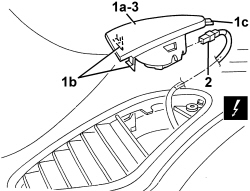

5570T92 FRONT TWEETER (ONE), LEFT OR RIGHT - R.R
- Path
- Procedures > 55 ELECTRICAL EQUIPMENT > 5570 ACCESSORIES > 5570T CAR RADIO AND CAR TELEPHONE > 5570T92 FRONT TWEETER (ONE), LEFT OR RIGHT - R.R
- Kind
- repair procedure (removal / refitting; the operation number is the code)
- Applies to
- all engines; all production periods
- Interactive page
- https://sloeber94.github.io/elrnDB/alfa/159/en/#/939011078
Applies to: all engines; all production periods
 Removing
Removing
 Refitting
Refitting1. Lift up the front tweeter mounting (1a) after having released the retainers (1b) then retainer (1c).
2. Disconnect the electrical connection.
Description | Component |
|---|---|
DRIVER'S FRONT TWEETER | |
PASSENGER SIDE FRONT TWEETER |
3. Keep the mounting and tweeter.

Applies to: all engines; all production periods
1. Release the retainers and remove the tweeter from the mounting.

Applies to: all engines; all production periods
Refitting
Removing- Check that the tweeter is not damaged.
- Position the tweeter in the mounting and attach the retainers.
- Connect the electrical connection.
- Place the front tweeter and mounting in position and attach the retainers.
Topics linked from this page (2)
Topics that link to this page (29)
- N061 IRREGULAR OPERATION OF VOICE RECOGNITION
- N063 THE TELEPHONE AUDIO CANNOT BE HEARD
- 5010B24 UNDER-FACIA AIR DUCTS - R.R.
- 5010C53 AIR VENT IN DASHBOARD (ONE), LEFT OR RIGHT FOR DEMISTING SIDE WINDOWS - R.R.
- 5040C10 AIR CONDITIONING CASING - R.R
- 5040C50 AIR CONDITIONING HEATER RADIATOR - R.R.
- 5040C64 A/C EVAPORATOR - R+R
- 5040D80 AIR CONDITIONER SYSTEM WIRING BUNDLE - R R OR REPLACE
- 5040D86 AIR CONDITIONING RIGHT AIR MIXTURE FLAP CONTROL MOTOR - R.R
- 5040D94 AIR CONDITIONING LEFT UPPER AIR DISTRIBUTION FLAP MOTOR (DEFROST) - R.R
- 5040D96 AIR CONDITIONING RIGHT UPPER DISTRIBUTION FLAP MOTOR (DEFROST) - R.R
- 5505C31 BUILT-IN WIRING UNDER DASHBOARD - R.R.
- 5505C41 PASSENGER COMPARTMENT WIRING - R.R
- 5580C22 AIR BAG MODULE - PASSENGER SIDE - R.R
- 5580C24 PASSENGER SIDE AIR BAG MODULE SUPPORT R. R.
- 7040A10 DASHBOARD TRIM - R+R
- 7210A74 R R FACIA SUPPORT BEAM
- E3510 RADIO - WIRING DIAGRAM
- E3510 RADIO - COMPONENT LOCATION
- E3510 RADIO - WIRING DIAGRAM
- E3510 RADIO - COMPONENT LOCATION
- E3510 RADIO - WIRING DIAGRAM
- E3510 RADIO - COMPONENT LOCATION
- E3510 RADIO - WIRING DIAGRAM
- E3510 RADIO - COMPONENT LOCATION
- E3510 RADIO - WIRING DIAGRAM
- E3510 RADIO - COMPONENT LOCATION
- E3510 RADIO - WIRING DIAGRAM
- E3510 RADIO - COMPONENT LOCATION